El museo vikingo de Lofotr, en las islas Lofoten
En agosto de 2019 fuimos 10 días de viaje por Noruega y llegamos hasta las islas Lofoten. Entre otras actividades, allí pudimos visitar el museo vikingo de Lofotr, situado en la isla Vestvågøya. En esta entrada te contamos cómo fue la visita al museo, con multitud de fotos. Resumen rápido: ¡nos gustó bastante! 😉
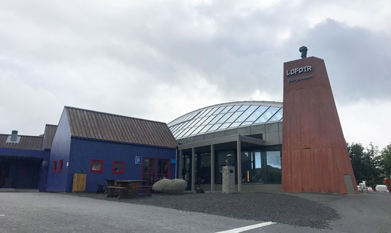El museo vikingo de Lofotr está a las afueras del pequeño pueblo de Bøstad, en la isla Vestvågøya del archipiélago Lofoten. El Lofotr Viking Museum abrió sus puertas en 1995 y es un buen lugar para aprender cosas interesantes sobre los vikingos y ver muy de cerca cómo vivían. Llegamos en coche habiendo salido desde Reine. Hacía buen día y nos habían dicho que el museo tiene varios puntos de interés en el exterior, así que aprovechamos. Cuando llegamos al lugar, dejamos el coche en el aparcamiento del museo y por el camino a la entrada vimos que se estaba nublando. Uy, con el solazo que hacía hasta ahora…
En la entrada te espera un restaurante, aseos y la tienda del museo. En la taquilla nos cobraron las 20 NOK de entrada (unos 17€) y nos orientaron un poco. También nos explicaron cómo funcionaba la audioguía y a qué horas empezaba la visita guiada en la casa vikinga. Para empezar, entras en una sala donde se te hace una introducción al lugar. Gracias a la app que puedes descargar gratis en el móvil, puedes escuchar los vídeos en tu idioma (español incluido). En la taquilla te prestan unos auriculares y, si por algún motivo tu móvil no es compatible o no tienes móvil, también pueden prestarte uno.
En 1983, un agricultor que quería plantar patatas en un campo encontró unos objetos metálicos mientras hacía surcos en el suelo. Resultaron ser joyas de la época vikinga y pronto llegó un grupo de arqueólogos noruegos para excavar en el lugar. En las excavaciones se descubrieron los cimientos de la casa vikinga más grande conocida hasta la fecha en Noruega. Era la casa del jefe de la región y medía 83 metros de largo y 9 metros de alto. Mediante los restos encontrados se estimó que la casa había sido abandonada hacia el 950 d.C. Después de unos años, se decidió reconstruir aquella casa vikinga justo al lado de los cimientos de la original. Y esa casa es el punto central del museo. Pero me estoy adelantando.
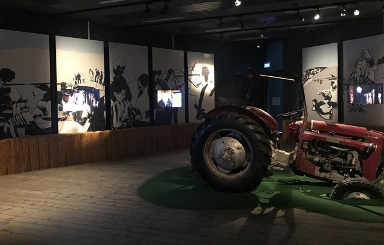Después de la sala con los vídeos del origen del museo, pasas a una sala con una gran pantalla de cine. Aquí te pasan una película breve pero muy bien hecha que trata sobre los orígenes míticos de la familia de jefes que ocupó la casa vikinga y el por qué se vieron obligados a abandonarla. Es bastante espectacular, aunque luego descubrimos que la película estaba un poco romantizada y no se ajustaba del todo a lo que ocurrió en realidad.
Antes de salir de la parte moderna del museo, entras en una sala donde puedes ver los objetos encontrados en los cimientos de la casa vikinga, expuestos en vitrinas. Hay las joyas de oro que se usaban para celebrar la construcción de la casa, espadas y otras clases de adornos y utensilios. Además, con la ayuda de unos maniquíes, puedes contemplar el aspecto y los ropajes que usaban los nobles propietarios de aquella casa en el siglo IX.
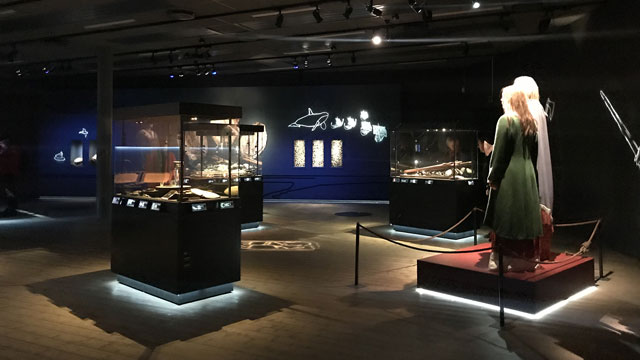Después de eso, el siguiente punto del recorrido te lleva a salir de la parte moderna del museo y caminar unos pasos para visitar la casa vikinga reconstruida. En ese momento ya llovía a cántaros, así que corrimos un poco con los paraguas y nos refugiamos en la casa vikinga.
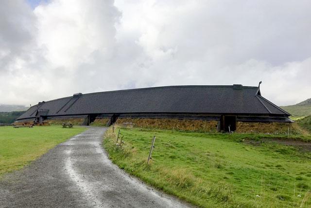Fue casi como viajar en el tiempo y llegar al siglo IX por arte de magia. Con la excepción de que por ahí rondaban otros turistas temporales como nosotros, claro. La casa vikinga de Lofotr es una casa larga con techo alto de paja y diversas salas una detrás de otra. En cada sala puedes encontrarte con vikingos y vikingas realizando tareas propias de la época. Se trata de personal del museo que están allí disfrazados como vikingos del s. IX y disponibles para responder todas las preguntas que quieras hacerles sobre lo que están haciendo. Me recordó mucho a la visita al castillo de Stirling cuando visitamos Escocia Me parece una forma genial de conocer detalles de la cultura vikinga, a tu ritmo.
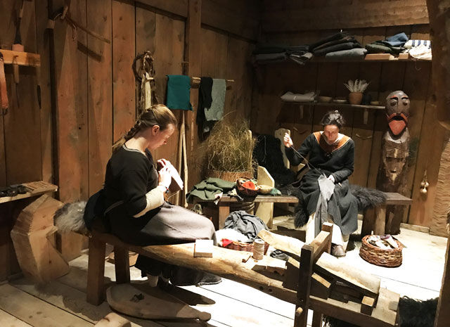Por ejemplo, le preguntamos a una chica que estaba bordando si nos podía explicar qué significaban unos grabados en madera que había al lado. Nos contó que explicaban la leyenda del Ragnarok y los había hecho de forma voluntaria un ebanista alemán. Ahí descubrí que este apocalipsis de las leyendas vikingas tiene, en realidad, un final feliz al cabo de todas las grandes catástrofes.
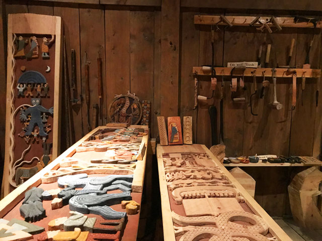La casa se divide en cinco zonas. En esta zona de la casa había varias secciones alrededor del hogar central. En su tiempo, esta sala estaba en realidad dedicada a los dormitorios, así que básicamente había catres para dormir alrededor de la hoguera.
Sin embargo, para exponer mejor los tipos de trabajos artesanales a los que se dedicaban los sirvientes de la casa, se han creado estas secciones. En otra sección había una especie de herboristería y cocina, y en otra había una mesa donde un vikingo le estaba mostrando a un niño cómo encender un fuego. Se trataba de rozar una piedra de pedernal y un eslabón para hacer saltar una chispa sobre unas virutas. Parecía fácil cuando lo hacía el señor vikingo, pero el pobre niño no lo conseguía ni a la de tres. Finalmente, en una mesa podías ver y empuñar varias armas y armaduras vikingas: espada, hacha de dos manos, yelmo, escudo, etc. Y claro, tuvimos que hacernos una foto con todo eso.
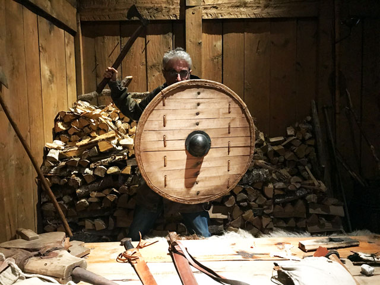En la zona central de la casa se hallaba la sala de los banquetes. En ese momento había un grupo de turistas comiendo allí mientras unos empleados les servían un cocido de un caldero calentado sobre el fuego central. Esta comida está reservada para grupos y tiene un coste extra. Cuando terminaron, volvimos a acercarnos para ver los detalles. Me encantó sentarme en el trono del jefe y ver las columnas de madera labradas y los ídolos de madera de varios dioses y diosas vikingos.
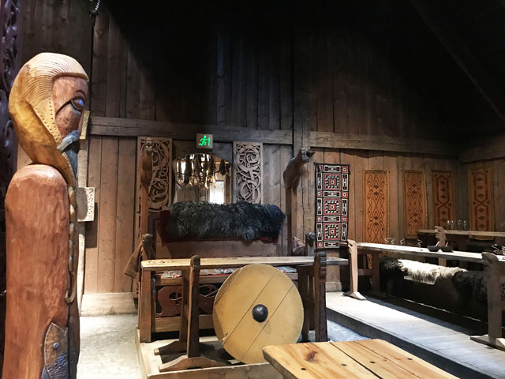Finalmente, el tercer tercio de la casa era el establo, pero aquí está reservado para unas breves visitas guiadas que se hacen cada cierto tiempo en varios idiomas. Nos apuntamos a la charla en español y nos contaron varios detalles generales de la vida de los vikingos y lo que me gustó más: sus creencias mitológicas. Es genial que tengan personal con dominio sobre tantos idiomas para hacer sentir como en casa.
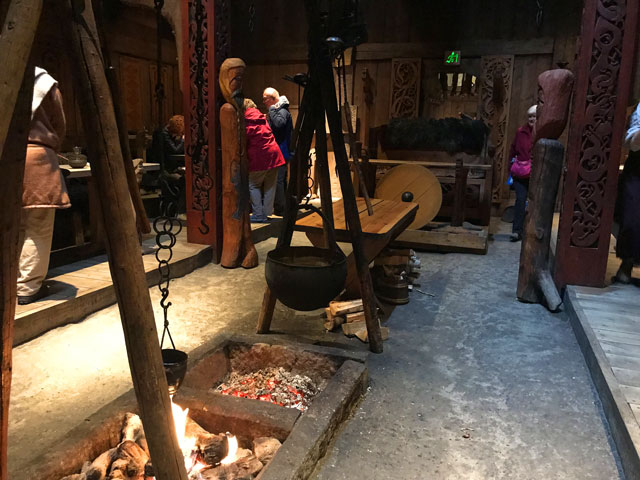Más tarde, salimos de la casa aprovechando que había dejado de llover y fuimos paseando hacia la zona de las actividades al aire libre. El terreno que cubre el museo es bastante grande. Por el camino saludamos a un rebaño de cabras y pasamos por delante de una forja. Por desgracia, el herrero estaba ausente. De lo contrario podríamos haber visto en directo cómo se forjaba el hierro en la época vikinga. Lo que sí pudimos hacer fue participar en las actividades de tiro con arco y lanzamiento de hachas. A mí se me dio muy bien el tiro con arco y a mi pareja le encantó arrojar las hachas contra el blanco. Habríamos repetido varias veces de no ser porque volvió a ponerse a llover en ese momento.
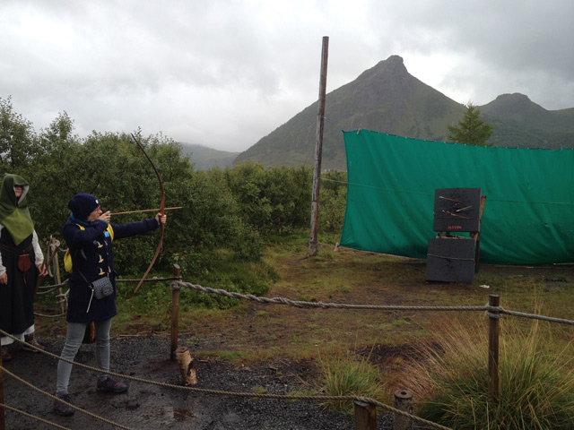Por último, nos acercamos al embarcadero. En un lago hay un muelle donde puedes subirte a un drakkar vikingo, un barco vikingo reconstruido, con su vela cuadrada, sus remos y su quilla casi plana. Esperamos un poco a que amainara la lluvia, porque el tiempo cambia muy rápido en las islas Lofoten, pero al final desistimos. No nos apetecía navegar mientras nos empapábamos. Fue una pena.
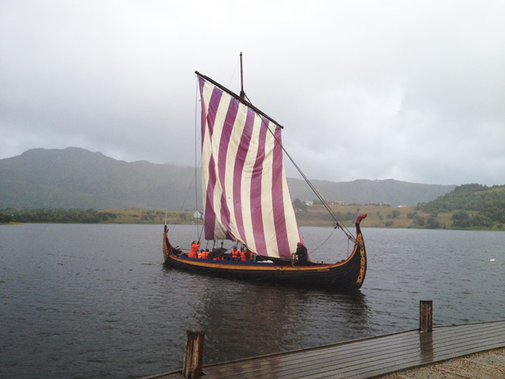Así terminó nuestra visita al museo Lofotr. Fue una visita muy amena y que recomendamos a todo el mundo. Si además te interesa la cultura vikinga o has disfrutado de la serie Vikings de la HBO te encantará este museo. Aunque si podéis ir entre el 5 y el 9 de agosto, será una visita aún mejor, porque en esos días se celebra un festival vikingo al que acuden cientos de personas vestidos de época.
Luego dimos una vuelta por la tienda de recuerdos y consideramos si quedarnos a comer en el restaurante del museo antes de volver. Pero no, vimos que era muy caro, así que fuimos a Leknes, un pueblo más grande más al sur, a buscar un restaurante. Después de buscar un rato por una zona de restaurantes y supermercados, acabamos comiendo en el Kan Thai, un restaurante tailandés que estaba muy bien de precio (para lo que es Noruega). Vale que no es muy vikingo, pero nos encanta la comida tailandesa. 🙂
Para terminar la jornada, de camino a nuestro B&B en Reine paramos en el pueblo de Gravdal para visitar la iglesia de Buksnes. Se trata de una iglesia de estilo noruego (Dragestil) muy fotogénica, de paredes de color rojo vivo y postes blancos.
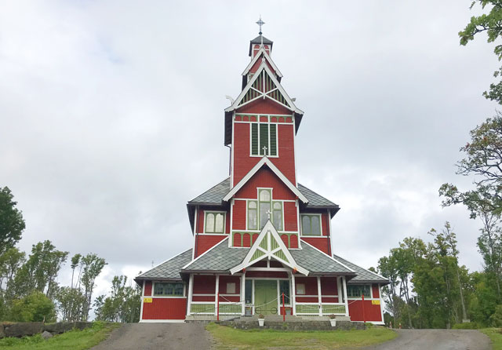Lofotr Viking Museum
Horario: de 12:00 a 16:00, domingos: 10:00 a 17:00. Entrada: junio, julio y agosto: adultos, 200 NOK (17€), niños 150 NOK (unos 13€), resto del año: adultos, 170 NOK (14,5€), niños 130 NOK (11€). Los menores de 6 años entran gratis y hay descuento para estudiantes y familias con 3 hijos. Página web.
Restaurante Kan Thai
Idrettsgata 25, 8370 Leknes. Dos platos de pad thai: aprox. 300 NOK (unos 26€). Agua gratis. ;-P
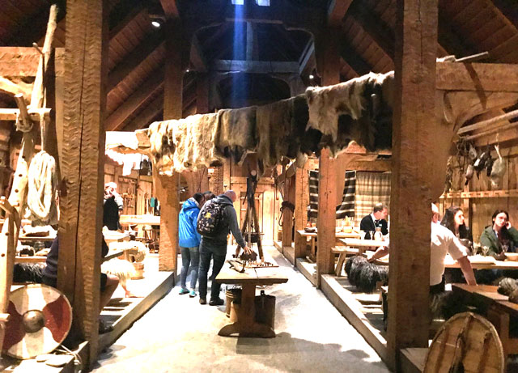